Shift Forks and Mainshaft Removal and Disassembly
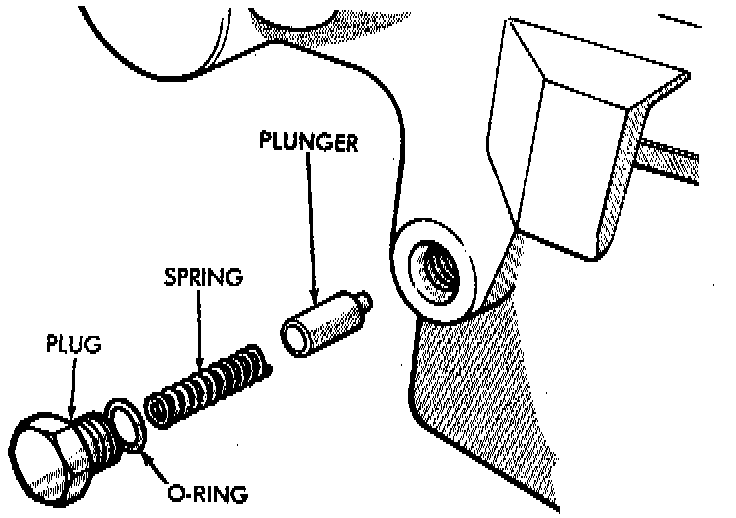
1. Remove shift detent plug, spring and pin.
2. Remove seal plug from low range fork lockpin access hole. Then move shift sector to align low range fork lockpin with access hole.
3. Remove range fork lockpin with size number one easy-out tool as follows:
a. Insert easy-out tool through access hole in side of transfer case and into lock-pin.
b. Tap easy-out tool into lock-pin with hammer until tool is securely engaged into the lock-pin.
c. Install a t-handle, such as from a tap and die set, onto the easy-out tool.
d. Securely tighten the t-handle onto the tool.
e. In one motion, pull upward and turn the t-handle counter-clockwise to remove the lock-pin.
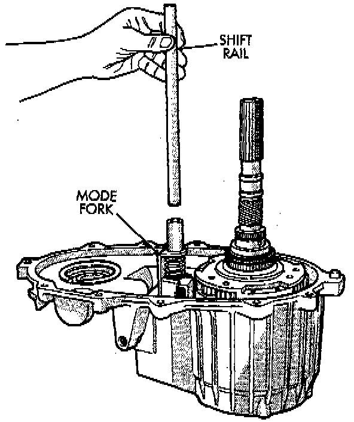
4. Remove shift rail by pulling it straight up and out of fork.
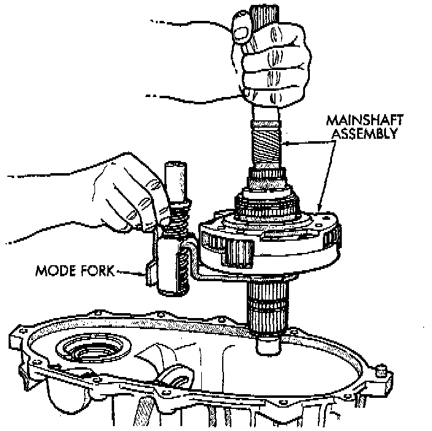
5. Remove mode fork and mainshaft as assembly.
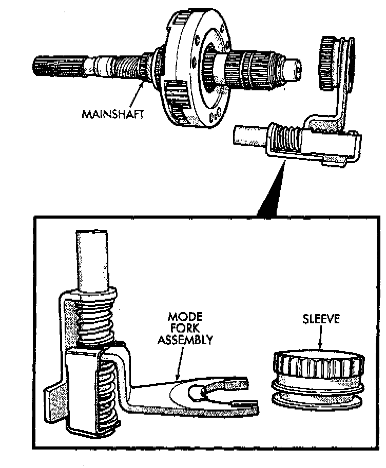
6. Remove mode shift sleeve and mode fork assembly from mainshaft. Note position of mode sleeve in fork and remove sleeve.
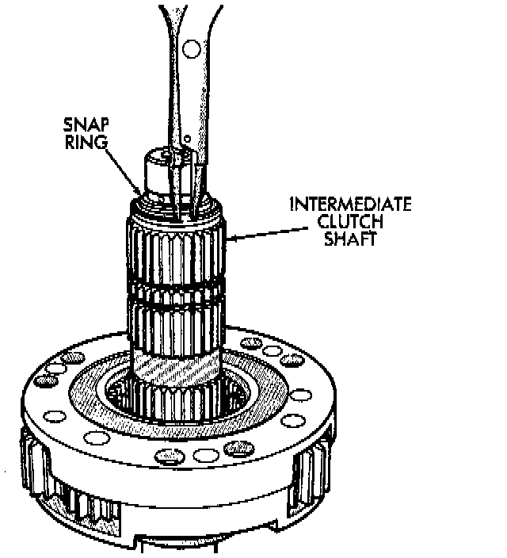
7. Remove intermediate clutch shaft snap-ring.
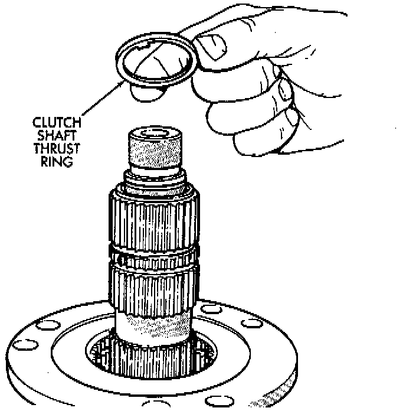
8. Remove clutch shaft thrust ring.
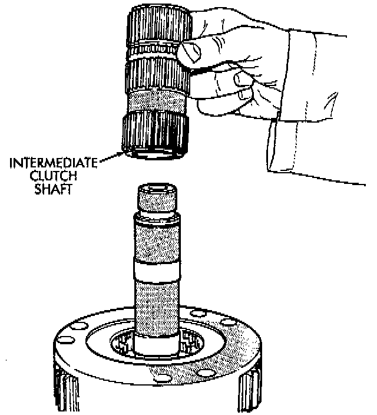
9. Remove intermediate clutch shaft.
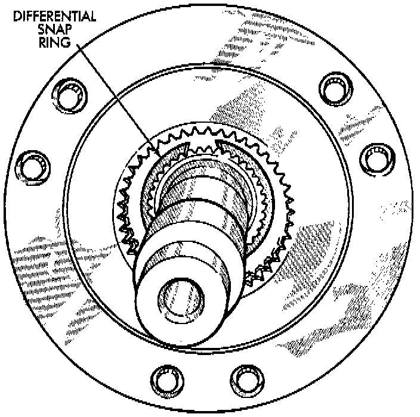
10. Remove differential snap-ring.
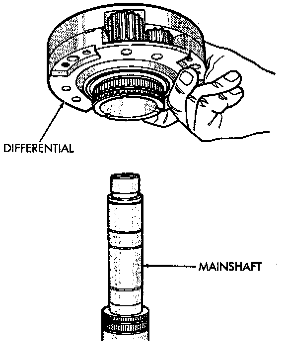
11. Remove differential.
12. Remove differential needle bearings and both needle bearing thrust washers from mainshaft.
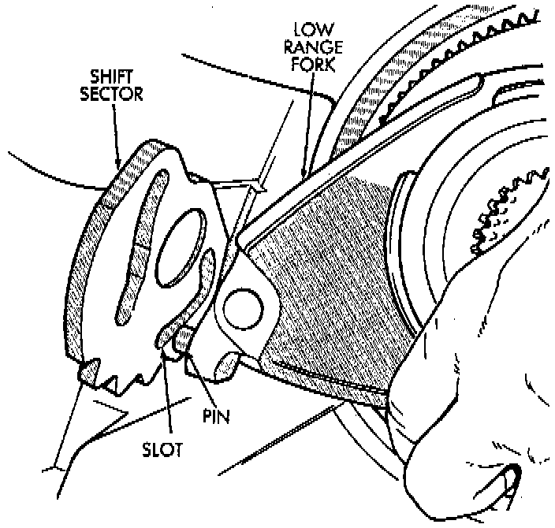
13. Slide low range fork pin out of shift sector slot.
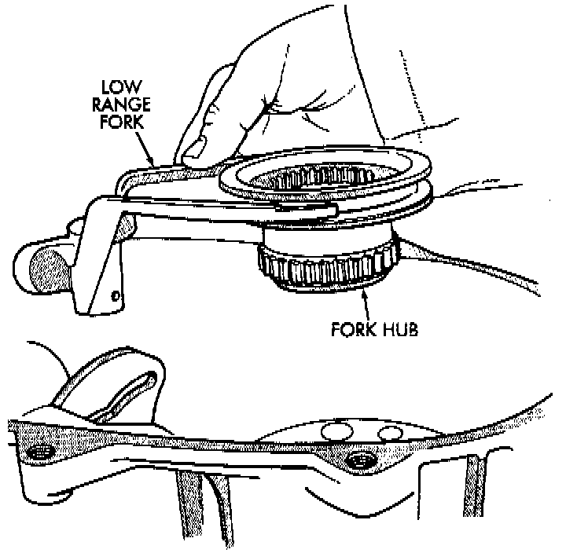
14. Remove low range fork and hub.
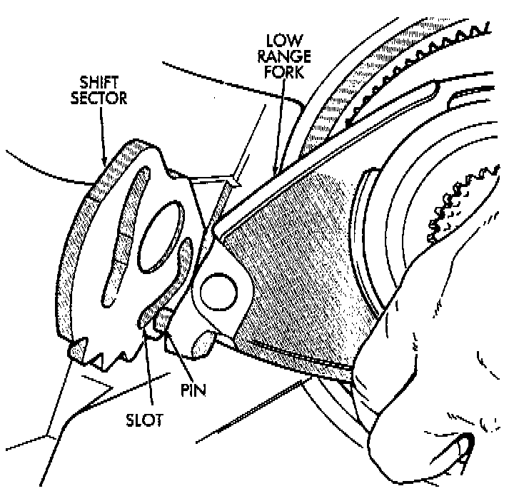
15. Remove shift sector.
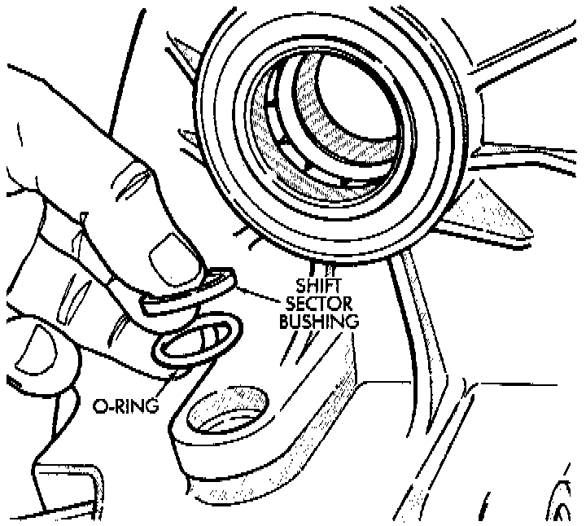
16. Remove shift sector bushing and O-ring.